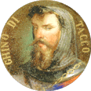

Torrita di Siena — Una leggenda che affonda le radici nella storia e nella mitologia toscana sta riemergendo, avvolta in un alone di mistero e curiosità: la leggenda del tesoro di Ghino di Tacco. Secondo antiche storie locali, Ghino di Tacco, noto bandito e figura quasi leggendaria della Valdichiana, avrebbe nascosto un inestimabile tesoro nei pressi del Bosco Secco, un luogo che, già per il nome evocativo, risveglia timori e fantasie tra gli abitanti del paese.
Recentemente, la scoperta di un medaglione risalente al basso medioevo ha riacceso le speranze che questo tesoro, da tempo ritenuto perduto, possa essere più di una semplice leggenda. Il medaglione, rinvenuto per caso in un campo di Torrita di Siena da un contadino, sembra portare inciso un simbolo misterioso: un drago stilizzato, lo stesso simbolo che è stato avvistato su una moneta ritrovata da alcuni ragazzi del luogo. Questo elemento, piccolo ma significativo, ha riaperto un capitolo che sembrava ormai chiuso.
 La storia di Ghino di Tacco, conosciuto anche come il “Robin Hood della Toscana”, si intreccia con racconti di giustizia, furti nobili e tesori nascosti. Si dice che il famoso bandito, in fuga dai suoi nemici, abbia trovato rifugio nei boschi della Valdichiana, dove avrebbe nascosto il suo tesoro per evitare che cadesse nelle mani sbagliate. La tradizione orale ha alimentato questa storia per generazioni, rendendo Bosco Secco e la campagna circostante un luogo di mistero e di fascino senza tempo.
La leggenda del tesoro è diventata nuovamente protagonista delle conversazioni locali quando una serie di eventi inquietanti ha iniziato a susseguirsi. Proprio come accadde nell'estate del 1986, quando tre giovani ragazzi scomparvero nei pressi del Bosco Secco, anche oggi ci sono voci che parlano di strani avvistamenti e di figure misteriose. Alcuni ritengono che questi fenomeni possano essere collegati al tesoro e che la ricerca di Ghino di Tacco non sia ancora terminata.
“Avevamo progettato di partire insieme, ma qualcosa è andato storto,” ha detto Freddy, un uomo del posto che era tra i giovani protagonisti degli eventi del 1986, quando era solo un adolescente.
Freddy, che oggi vive in solitudine, è stato tra i primi a essere coinvolto nella misteriosa scomparsa dei suoi amici, e tuttora sostiene che ci siano segreti che nessuno ha mai scoperto. Secondo lui, il medaglione e la moneta potrebbero essere la chiave per svelare il mistero e, forse, ritrovare finalmente il leggendario tesoro.
Per alcuni, però, la storia del tesoro è solo una favola per spaventare i bambini e intrattenere i turisti. “Non è mai esistito nessun tesoro. Sono tutte sciocchezze,” dice Giovanni Coppetti, il contadino che ha trovato il medaglione, il quale ha raccontato di aver visto il bagliore di un oggetto metallico mentre lavorava nei campi. Tuttavia, la scoperta del medaglione e la sua consegna agli esperti hanno sollevato molte domande e pochissime risposte.
Il medaglione, attualmente custodito sotto stretta sorveglianza nella biblioteca comunale, è oggetto di studi approfonditi da parte di storici e archeologi. La speranza è che possa rivelare qualche indizio sulla vera ubicazione del tesoro o, almeno, gettare luce su un capitolo oscuro della storia di Torrita di Siena.
Nel frattempo, la comunità locale resta divisa: alcuni sperano di vedere il mistero finalmente risolto, mentre altri temono che la ricerca del tesoro possa portare solo altro dolore e altri misteri irrisolti. Quel che è certo è che la leggenda del tesoro di Ghino di Tacco continua a vivere, alimentata dalle nuove generazioni, dal fascino dell’ignoto e dal desiderio di scoprire ciò che il tempo ha nascosto.